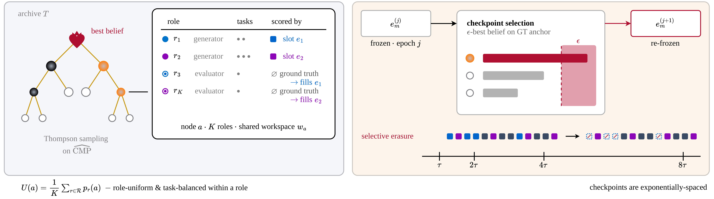
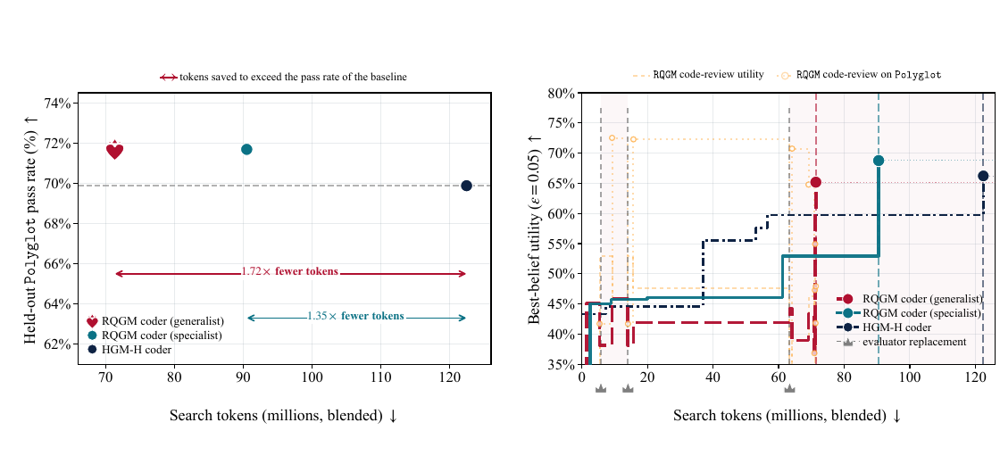

Red Queen Gödel Machine: Self-Improving Agents Co-Evolving with Their Evaluators
TL;DR
- "The Red Queen Gödel Machine: Co-Evolving Agents and Their Evaluators" (arXiv 2606.26294, 24 June 2026) removes the one component every previous Gödel machine held fixed: the thing that decides whether a self-edit was an improvement. The judge is now an evolving agent inside the archive. The paper is Cambridge-led (Alex Iacob, Andrej Jovanović, William F. Shen, equal first authors) with co-authors at NVIDIA, Flower Labs, MBZUAI and Inria — not, as the thread that surfaced it says, an NVIDIA paper.
- What keeps this from becoming a moving-goalposts disaster is controlled utility evolution: search runs in epochs under one frozen evaluator; the evaluator may change only at exponentially spaced checkpoints, and only if a challenger beats it on a fixed ground-truth anchor; every score the displaced evaluator produced is then erased. Each epoch is therefore a fixed-criterion search, so the Huxley Gödel Machine's guarantees still apply — one epoch at a time.
- Results are modest where verification exists and large where it does not. Coding: held-out Polyglot 69.9% → 71.7% (119/166 vs 116/166) at 1.35×–1.72× fewer tokens. Paper writing, where no benchmark can score the artifact: reviewer-panel acceptance 21.8% → 40.5% (1.86×). Proof writing: the specialist beats a gold-medal hand-built pipeline on mean score but concedes on the strictest metric.
Why this matters
Every system in this tracker's Gödel-machine thread — Darwin, Huxley, Mendel, Hyperagents — edits an agent's own code and keeps the edits that score better. The scoring is load-bearing, and it has always sat outside the loop: a test suite, a benchmark, a labelled split. That bounds the enterprise three ways. It rules out any domain where no benchmark exists (you cannot recursively self-improve at writing papers if nothing can grade a paper). It makes evaluation the dominant cost whenever the verifier is itself a multi-turn agent run. And once the archive saturates the benchmark, or learns to game it, the loop is done — the ceiling is the ruler.
RQGM's premise is that this is a modelling error borrowed from optimisation rather than evolution: species do not climb a fixed fitness landscape, the landscape is other species and it moves. What makes the metaphor useful is that the authors identify exactly what breaks when the objective moves — every previous score in the archive becomes meaningless — and pay that cost explicitly. The contribution is not "let the judge evolve," which is obvious; it is the bookkeeping that makes an evolving judge compatible with the guarantees you already had, at linear rather than quadratic cost.
The core idea
Start with the Huxley Gödel Machine, which RQGM inherits wholesale: a tree-shaped archive of agent variants grown by alternating expansion (an agent edits its own code, producing a child) and evaluation (an agent runs one task, producing a binary outcome), with either action assigned by Thompson sampling over clade statistics — the pooled success rate of a node's whole subtree, not the node alone. RQGM changes four things.
Each archive node is a workspace, not an agent. A node holds several agentic roles sharing one codebase — writer and reviewer, coder and code reviewer, prover and grader — plus a meta-agent that can edit any of them. Roles may reuse each other's code; only the scoring and orchestration harness is fixed.
Some of those roles are the evaluators. A role with a real benchmark (Polyglot tests) is evaluator-independent. A role without one (paper writing) is evaluator-dependent and is scored by an evaluator slot holding a frozen copy of some evaluator agent from the archive.
The slot's occupant can be replaced, but only at checkpoints. The stretch between two replacements is an epoch, within which the evaluator, the artifact-generation protocol and the scoring rule are all frozen, so every outcome recorded in that window means the same thing.
Replacement is judged against something that never moves. Each evaluator role has a ground-truth anchor — a fixed held-out set of objective or human labels: real conference accept/reject decisions for paper review, human IMO grades for proof grading, accepted/rejected pull requests for code review. Incumbent and challengers are compared only on this anchor, which is what stops a co-evolving judge drifting toward whatever is easiest to satisfy.

Figure 2 from the paper. Left: each node is a shared workspace with several roles; generators are scored by evaluator slots, evaluators by fixed ground truth. Right: at a checkpoint, challengers face the incumbent on the anchor, the winner is frozen for the next epoch, and the displaced evaluator's records are erased.
The payoff: because the objective may change at boundaries, you can change it on purpose, not merely improve it — which is how the paper's sharpest result works, an adversarial term injected mid-search to fix a bias a fixed evaluator cannot even express.
How it works
The loop in one sentence. RQGM runs the ordinary self-improvement loop — expand, evaluate, expand, evaluate — under a frozen judge, and every so often stops, swaps the judge for a better one, and throws away every score the old judge produced. Everything else is detail about who gets swapped, when, and what "better" means.
One epoch boundary, start to finish
The setting is the paper-writing run. One workspace holds two roles sharing a codebase: a writer that produces papers, and a reviewer that accepts or rejects them. No benchmark can score a generated paper, so the writer's entire fitness signal is the reviewer's verdict. The reviewer is checked against 100 held-out real conference accept/reject decisions.
Step 1 — During the epoch, who is grading whom? The reviewer in the slot is a frozen snapshot; it does not change while the epoch runs. Every writer variant is scored by it, and those scores accumulate as ordinary wins and losses. Meanwhile the live reviewer role keeps evolving in the archive like any other agent, scored separately against the real conference decisions. The archive is simultaneously growing better writers under today's judge and better judges for tomorrow.
Step 2 — What triggers a boundary? Nothing adaptive: checkpoints are scheduled in advance at doubling intervals — after 1 unit of budget, then 2, then 4, then 8. Early swaps are cheap because little has been recorded; late swaps are rare because the gap has grown. That is the whole reason the accounting stays affordable.
Step 3 — Who is allowed to take the slot? The incumbent plus every reviewer variant the archive has produced, ranked only by agreement with the 100 real conference decisions — never by how they scored writers, which would be circular. A candidate needs at least five recorded anchor outcomes to be ranked at all, and ties go to the incumbent, because a swap is expensive. The contenders at selection time:
| Reviewer | Agrees with real decisions | Accepts |
|---|---|---|
| Best fixed-evaluator baseline reviewer | 88 / 100 | 45% |
| RQGM reviewer, best raw accuracy | 84 / 100 | 40% |
| RQGM reviewer just before the swap | 84 / 100 | 42% |
| RQGM reviewer after the adversarial epoch | 80 / 100 | 32% |
| Published prior-work reviewer | 73 / 100 | 25% |
| Hand-written prompt reviewer (real conference form) | 63 / 100 | 13% |
Step 4 — The swap happens, and the writer's scoreboard is deleted. This is the part that feels wrong the first time and is the crux of the design. Every win and loss the writers accumulated under the old reviewer is erased — not rescaled, not carried over. Keeping them would mix two different judges into one number. Scores that never depended on the displaced reviewer (the anchor evidence, anything from other roles) survive untouched. Clade statistics are recomputed and search continues.
Step 5 — The archive is genuinely re-ranked, not just re-scored. After the swap the fitness ordering of writers shifts substantially and never drifts back. Lineages the previous reviewer ranked low are pulled into contention, so the new bar is met by different candidates rather than the same ones re-measured. One thing survives: the best lineage tends to stay on top — the population is hardened around a stable backbone, not scattered.
Step 6 — The deliberate twist: make the next judge adversarial. LLM judges accept machine-written text more readily than human-written text, and the baseline reviewer here does exactly that, accepting AI papers at up to 1.91× the human rate. RQGM exploits the boundary: papers the displaced reviewer accepted become a pool, and the next epoch additionally rewards reviewers for rejecting them — on top of, not instead of, agreement with the real decisions. A change to the objective itself, expressible only because objectives may change at boundaries.
Step 7 — What that bought, and what it cost. The selected reviewer is less accurate on raw conference decisions (80/100 against the baseline's 88/100), unavoidably, since the benchmark's accept/reject balance rewards leniency. What it gains is calibration — it accepts machine- and human-written papers at similar rates — and it is a far better teacher. The writer co-evolving under it reaches 40.5% mean acceptance across a four-reviewer panel against the fixed-evaluator writer's 21.8%, measured by judges neither writer trained against.
The machinery behind steps 1–5
Four quantities govern everything above.
Which agent gets the next action (steps 1 and 5). Nodes are drawn by Thompson sampling over clade metaproductivity:
Here \(a\) is one archive node; \(C(a)\) is its clade, the whole subtree rooted at \(a\) including \(a\) itself; \(n_{\mathrm{success}}^{C}(a)\) and \(n_{\mathrm{failure}}^{C}(a)\) count every solved and failed task recorded anywhere in that subtree; and \(\widehat{\mathrm{CMP}}(a)\) is the resulting pooled success rate. Using the subtree rather than the node lets a mediocre agent with thriving descendants keep attracting budget — the evidence its branch is fertile lives in its children. Inherited unchanged from Huxley.
How anything is ranked, including evaluators (step 3). Both final agent selection and evaluator replacement use the same conservative score:
\(S_a\) and \(F_a\) are the successes and failures recorded for \(a\); \(1+S_a\) and \(1+F_a\) are those counts under a uniform prior; \(I^{-1}_{\epsilon}\) is the inverse regularised incomplete Beta function, i.e. the \(\epsilon\)-quantile of the resulting Beta posterior; \(\epsilon\in(0,1)\) is the confidence level, set to 0.05 in every run. Read \(BB_{0.05}(a)\) as "a true success rate this agent exceeds with 95% probability" — a lower bound, not an estimate. Which is why an agent that went 1-for-1 does not win: with two outcomes the lower bound is near zero regardless of the ratio. Applied to evaluators on the anchor, a challenger is promoted only when its guaranteed anchor performance beats the incumbent's — the paper's formal argument that replacements improve things across epochs, not merely within them.
How the population is capped. Expansion is permitted only when
where \(N_t\) is the number of evaluations performed by step \(t\), \(|\mathcal{T}_t|\) is the archive's current node count, and \(\alpha\in(0,1)\) is the expansion exponent, fixed at 0.6 (inherited from Huxley); otherwise the step is an evaluation. Archive size therefore grows as roughly the 0.6 power of the evidence behind it — the 12,288-evaluation budget supports on the order of 280 nodes, not thousands.
What "utility" means when a node has several roles. A node is a workspace, so its fitness is an average of averages:
\(\mathcal{R}\) is the node's set of roles and \(|\mathcal{R}|\) their count; \(\mathcal{D}_r\) is the finite pool of tasks role \(r\) is scored on; \(p_{r,d,\boldsymbol{j}}(a)\) is node \(a\)'s expected success rate on task \(d\) of role \(r\); \(p_{r,\boldsymbol{j}}(a)\) is that averaged uniformly over the role's tasks; \(U_{\boldsymbol{j}}(a)\) is the uniform average over roles. The subscript \(\boldsymbol{j}\) is the epoch vector — one epoch index per evaluator slot — and its presence in every term is the formal statement that these numbers mean something only within one epoch. When a slot advances, every quantity carrying that slot's index is exactly what gets erased. Because the averages are uniform rather than sample-weighted, a node is rewarded for improving all its roles, which makes co-evolution a shared search rather than two searches competing for budget.
The scheduler choosing what to evaluate is deliberately dumb: a node by Thompson sampling, then its least-evaluated role, then that role's least-evaluated task — round-robin at the bottom, uncertainty-driven sampling at the top.
# RQGM search (Algorithm 1), annotated with the paper-domain example
T <- {seed workspace}; N <- 0
for each evaluator slot m: epoch[m] <- 1; E[m] <- Freeze(incumbent)
while N < total_budget: # runs: 12,288 evaluations
b <- next checkpoint after N # checkpoints double: 1,2,4,8,...
while N < b:
if N^alpha >= |T|: # EXPAND
parent <- ThompsonSample(clade CMP)
child <- parent's meta-agent edits the shared workspace
if valid(child): T <- T + {child} # writer AND reviewer code
a <- ThompsonSample(clade CMP) # EVALUATE
r <- least-evaluated role of a # writer or reviewer
d <- least-evaluated task of r
o <- run a's role r on d, scored by frozen E[m] or by anchor
record (a,r,d,o) tagged with epoch vector; N <- N + 1
for each evaluator slot m: # CHECKPOINT ONLY
cands <- {E[m]} + reviewer variants in T
rank by BB_eps on the anchor # never on writer scores
best <- argmax (ties -> incumbent) # >= 5 anchor outcomes
if best != E[m]:
epoch[m]++; E[m] <- Freeze(best)
erase every record tagged with slot m # writers' scoreboard
recompute clade statistics
# optional: papers the displaced reviewer accepted become
# an adversarial pool the next epoch rewards rejecting
return argmax BB_eps over archive nodes
Cost is amortised: after a swap, old nodes are re-scored only when search returns to them, and cached agent outputs mean re-scoring rarely needs a fresh generation call.
Caveats on the mechanism itself
Three things deserve flagging before the numbers, all of them the authors' own.
The guarantees are epoch-local and nothing more. They bound neither the number of transitions, nor cumulative regret from erased evidence, nor convergence to any globally optimal agent–evaluator pair. The tree topology inherited across a boundary may reflect expansion choices optimised for a judge that no longer exists.
The anchor is the whole ceiling. Anchoring replacements to fixed ground truth keeps evaluators honest but confines them to the anchor's own decision boundary — and the anchors here are themselves imperfect. Improvement beyond the benchmark must come from objectives layered on top, of which the adversarial reviewer is the single demonstrated instance.
Epoch-local stationarity cannot strictly hold in the wild. Provider-side model updates, nondeterministic tools and hardware variation all break the assumption that a frozen evaluator gives the same verdict twice — true of every framework without full stack control, and a sign the formal apparatus is cleaner than reality.
Results
- Coding, where ground truth already exists (RQ1). Co-evolving a code reviewer alongside the coder lifts held-out Polyglot pass rate from the prior state of the art's 69.9% to 71.7% — 119/166 versus 116/166 — at 1.35×–1.72× fewer blended tokens. The mechanism is not extra effort: 90% of accepted patches modify shared functionality used by both roles, so one edit improves two utilities.

Figure 1 from the paper. Left: RQGM exceeds the baseline pass rate at 1.35×–1.72× fewer tokens. Right: the sawtooth is the whole design — each dashed rule is a replacement, each drop is erasure discarding the displaced reviewer's records, each re-climb is the archive re-earning its score under a stricter judge.
- Paper writing, where no benchmark can score the artifact (RQ2). Against a fixed panel of four reviewers, the fixed-evaluator baseline writer reaches 21.8% mean acceptance at 42.5M search tokens. RQGM's generalist reaches 38.8% (1.78×) at a comparable 44.6M; its specialist reaches 40.5% (1.86×) at 221.8M.
- Proof writing. Mean grade (0–7) across a three-grader panel: static hand-built IMO-gold pipeline 4.07, baseline prover 3.73, RQGM generalist 3.73 (identical, at 1.8× the cost), RQGM specialist 4.33. Pass@6 rises to 61.7%, but Pass@7 — full credit — is 48.3% against the hand-built pipeline's 55.0%: more near-complete proofs rather than more complete ones.
- Evaluators improve too (RQ4). The co-evolved grader reaches the best anchor accuracy of any judge tested at 3× lower search cost than the baseline, and got there in two patches — one adding a milestone-checking rubric, one reversing an over-strict calibration. The abstract reports 9% higher ground-truth accuracy for co-evolved graders.
- Erasure is load-bearing (RQ3). After each replacement the rank correlation between old and new orderings settles well below 1 and never recovers. The no-erasure control stays pinned at ρ ≥ 0.90 — stale scores hold the old order in place and the new criterion never gets to re-rank anything.
- Ablations, on a smaller backbone. Turning replacement off lets the writer saturate its frozen critic at 75/75 accepted validation papers while that critic's anchor accuracy sits at 78.2% — textbook reward hacking. Replacement alone escapes the plateau (91.2%); the full mechanism reaches 95.0%. Separately: validation is 65–69% of blended tokens, expansion only 18–23%.
How it connects
- Darwin Gödel Machine — the origin of the archive-of-self-modifying-variants design RQGM assumes; read it first if the expand/evaluate loop is unfamiliar. The lineage is four deep: DGM built the archive, Huxley made archive sampling efficient, Hyperagents turned each node into a multi-agent workspace, and RQGM makes the evaluator a first-class occupant of that workspace. Its baseline throughout is "Hyperagents with Huxley search and a frozen evaluator" — the cleanest possible isolation of the co-evolution variable.
- Mendel Gödel Machine — the complement and the sharpest contrast. MGM holds the evaluator fixed and upgrades the evidence each self-edit sees; RQGM holds the edit operator fixed and upgrades the evaluator. Both are single-variable interventions on the same Huxley substrate, both claim the win comes from information quality rather than search intensity, and nothing prevents composing them.
- Evolving Benchmarks — the direct thematic sibling: what happens when the measuring instrument is part of the system being measured. RQGM's answer is unusually concrete (freeze within epochs, anchor replacements to something fixed, erase what the old instrument measured), and the erasure ablation is the strongest evidence yet that co-evolving evaluation only works if you are willing to throw evidence away.
- Ouroboros: Reviewed Core Evolution — puts a reviewing step inside the evolution loop, but with a fixed reviewer. RQGM's fixed-critic ablation (writer saturates at 75/75 while the critic is 78% accurate on reality) is precisely the failure mode that design is exposed to.
- Rethinking Harness Evolution and AIDE² / RSI evidence — the sceptics' corner. RQGM's coding result (+1.8pp held-out at 1.35–1.72× lower cost) is exactly the small-but-cheaper datapoint that matched-budget argument needs.
- Meta-Harness, Living Harness and Harness-R1 — all three optimise a scaffold against a fixed reward. RQGM argues the reward is the next thing to make learnable, and its epoch machinery is a ready-made recipe for doing so without losing the ability to compare runs.
Critical take
The headline the thread ran with — NVIDIA, terrifying, holy grail — is not what the paper says. The paper calls itself "a preliminary empirical investigation," is Cambridge-led, and its coding result is three additional tasks out of 166. Reporting is single-run with no seed variance, so that margin sits inside the noise of one evolutionary search; the token-efficiency half is the defensible half. The large numbers all come from domains where the metric is another LLM's opinion. The writer panel is a fair test — four judges, none of which the RQGM writer trained against — but the proof-grading table has a wrinkle the paper does not discuss: the RQGM grader scores the RQGM specialist prover 4.95 where the two static graders give it 3.85 and 4.20, while scoring the hand-built IMO prover at 4.05, the same as everyone else. The grader is uniquely generous to exactly one prover, the one it co-evolved with (my reading of the appendix's per-grader table — the paper argues graders are insulated from self-preference bias because they see a reference solution, and does not address this asymmetry). Elsewhere the reporting is honest: the generalist prover ties the baseline at nearly twice the cost; Pass@7 loses to a hand-built pipeline; the adversarial reviewer buys calibration with 8 points of anchor accuracy. The mechanism ablations run on a different, smaller backbone, so "erasure matters" is established somewhere the main results were not. And the deepest limitation is the authors' own: anchoring every replacement to fixed ground truth means the evaluator can never exceed the anchor's decision boundary, so a framework sold as escaping the evaluation ceiling has for now replaced one ceiling with a slightly higher one — the adversarial pool being the sole demonstrated way past it. What will outlast these numbers is the bookkeeping: epochs, anchor-gated replacement, selective erasure, exponential checkpoints.
If you remember three things
- The objective can move if you pay for it honestly. Freeze the evaluator within an epoch, change it only at exponentially spaced checkpoints, and erase every score the displaced evaluator produced. Each epoch is then a fixed-criterion search, so existing guarantees apply per epoch at linear rather than quadratic bookkeeping cost. The no-erasure control (rank correlation stuck at ρ ≥ 0.90) shows erasure is what makes the new criterion bite.
- An anchor is what separates co-evolution from drift. Evaluators are promoted only by beating the incumbent's lower-bound score on fixed ground truth, never on how they scored the generators. Remove that and you get the fixed-critic ablation: a writer saturating at 75/75 under a critic 78% accurate on reality.
- The size of the win tracks how badly you needed a learned judge. Where a verifier exists, co-evolution buys +1.8pp and a 1.35–1.72× token discount, largely because 90% of edits improve both roles at once. Where nothing can score the artifact, it buys 1.86× the acceptance rate — plus the ability to state an objective ("be as harsh on machine text as on human text") that no fixed benchmark can express.